| 1. 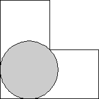 | 2-3. 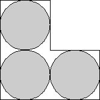 | 4. 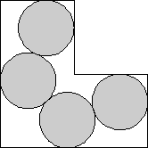 | ||
| s = 2 + √2 = 3.414+ Trivial. | s = 4 Trivial. | s = 5.304+ Found by Erich Friedman in June 2005. |
| 5. 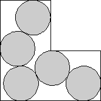 | 6. 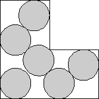 | 7. 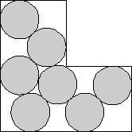 | ||
| s = 5.780+ Found by David W. Cantrell in June 2005. | s = 6.416+ Found by David W. Cantrell in June 2005. | s = 6.787+ Found by David W. Cantrell in June 2005. |
| 8. 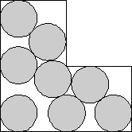 | 9. 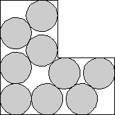 | 10. 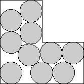 | ||
| s = 7.116+ Found by Erich Friedman in June 2005. | s = 4 + 12/√13 = 7.328+ Found by Erich Friedman in June 2005. | s = 7.628+ Found by Erich Friedman in June 2005. |
| 11. 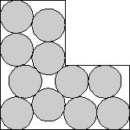 | 12. 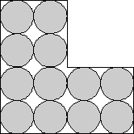 | 13. 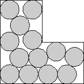 | ||
| s = 4 + √2 + √6 = 7.863+ Found by David W. Cantrell in January 2006. | s = 8 Trivial. | s = 8.812+ Found by David W. Cantrell in January 2006. |
| 14. 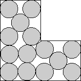 | 15. 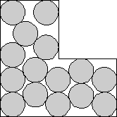 | 16. 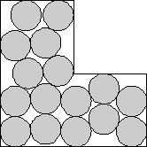 | ||
| s = 9.085+ Found by David W. Cantrell in January 2006. | s = 9.412+ Found by David W. Cantrell in January 2006. | s = 9.635+ Found by David W. Cantrell in January 2006. |